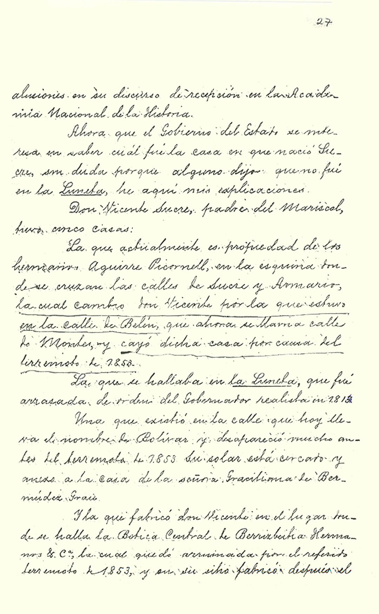
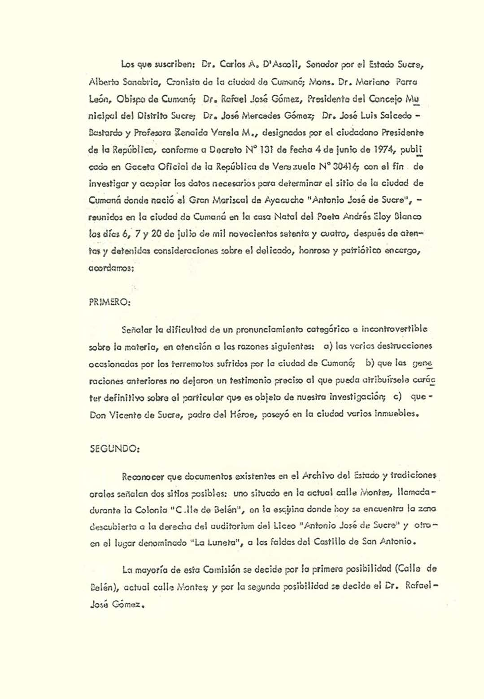

Apéndice A Anexos Documentales.
Advertencia: Está permitido el uso de estos documentos (tenencia, copia y distribución), pero no está permitida ninguna adulteración o modificación; tanto del texto o de la forma de su presentación.





Advertencia: Está permitido el uso de estos documentos (tenencia, copia y distribución), pero no está permitida ninguna adulteración o modificación; tanto del texto o de la forma de su presentación.